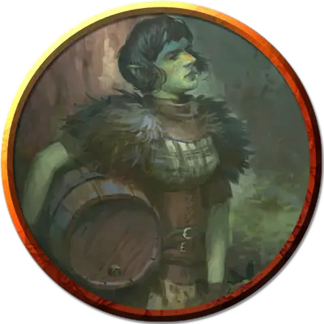

Фенсир застрельщик
Fensir Skirmisher
Большой Великан, любое мировоззрение

Класс Доспеха 15 (кольчужная рубаха)
Хиты 94 (9к10 + 45)
Скорость 30 футов
| мод | спас | ||
|---|---|---|---|
| СИЛ | 18 | +4 | +4 |
| ЛОВ | 15 | +2 | +2 |
| ТЕЛ | 20 | +5 | +5 |
| мод | спас | ||
|---|---|---|---|
| ИНТ | 14 | +2 | +5 |
| МДР | 11 | +0 | +3 |
| ХАР | 12 | +1 | +1 |
Навыки Выступление +6
Чувства тёмное зрение 60 футов, пассивное Восприятие 16
Языки Общий, Великаний
Опасность 6 (2300 опыта)
Бонус мастерства +3
Особенности
Регенерация. Фенсир восстанавливает 10 хитов в начале своего хода, если он не находится под солнечным светом. Если фенсир получает урон кислотой или огнем, эта особенность не действует в начале следующего хода фенсира. Фенсир умирает только если начинает ход с 0 хитов и не может регенерировать.
Гиперчувствительность к солнечному свету. Когда фенсир начинает свой ход под солнечным светом, он должен преуспеть в спасброске Телосложения Сл 15, иначе станет окаменевшим до тех пор, пока фенсир больше не окажется на солнечном свету.
Действия
Мультиатака. Фенсир совершает три атаки Боевым топором или две атаки Волшебным камнем.
Боевой топор. . Рукопашная атака оружием: +7 к попаданию, досягаемость 5 футов, одна цель. Попадание: 13 (2к8 + 4) рубящего урона или 15 (2к10 + 4) рубящего урона при использовании двумя руками.
Волшебный камень. . Дальнобойная атака заклинанием: +5 к попаданию, дистанция 60 футов, одна цель. Попадание: 15 (2к12 + 2) дробящего урона. Если цель Большого размера или меньше, оно должно преуспеть в спасброске Силы Сл 13, иначе упадёт ничком.
Грязь в камень (перезарядка 6). Фенсир выбрасывает магическую массу грязи, которая забрызгивает всех существ в сфере радиусом 30 футов с центром в точке, которую фенсир может видеть в пределах 60 футов от себя. Каждое существо, не являющееся фэнсиром, оказавшееся в этой области должно преуспеть в спасброске Ловкости Сл 13, иначе получит 13 (3к8) дробящего урона и станет опутанным, так как грязь начнет превращаться в камень. Пораженное существо должно повторить спасбросок в конце своего следующего хода. В случае успеха, эффект оканчивается. В случае провала существо становится окаменевшим на 24 часа.
• Использование заклинаний. Фенсир накладывает одно из следующих заклинаний, используя Интеллект в качестве базовой характеристики:
• 1/день каждое: сотворение или уничтожение воды [create or destroy water], обнаружение магии [detect magic], бесследное передвижение [pass without trace];
Описание
Приводить троллей в место, где ничто по-настоящему никогда не умирает, кажется откровенно плохой идеей. О чем думали эти великаны?
- Бигби
И все же, можем ли мы справедливо сказать, что существование фенсиров “откровенно плохо”? Кто-то может возразить, что они являются эволюционным шагом вперёд по сравнению с троллями. По крайней мере, разнообразие жизни в мультивселенной увеличилось, и были обнаружены новые чудеса. Это плохо только в том случае, если вы считаете, что правильным является небольшая вселенная, укладывающаяся в рамки вашего узкого миропонимания.
- Дианкастра
Давным-давно группа ледяных великанов возглавила поход троллей, чтобы завоевать расположение Аннама, завоевав внешний мир Асгард. Кампания по завоеванию быстро провалились, но атакующие обнаружили ключевую особенность Асгарда: существа, убитые на этом плане, возвращаются к жизни на следующем рассвете. Таким образом, вторжение великанов стало частью вечной битвы, которая бушует по всему миру. Тролли, чья фундаментальная природа была изменена постоянной регенерацией и перерождением под воздействием энергии Асгарда, медленно превращались в совершенно новых существ: фенсиров.
Родство фенсиров и троллей едва ли заметно по их внешнему виду. У них сохранились выдающиеся носы и оттенок зеленого в коже, но в остальном они напоминают относительно небольших ледяных или каменных великанов. Они используют доспехи и оружие, подобные тем, что используют другие бойцы на Асгарде в вечной битве.
Трансформация, которая создала фенсиров, наделила их странными способностями к регенерации: их регенерация не работает при солнечном свете, и на самом деле солнечный свет может превратить этих существ в камень.
ФЕНСИР застрельщик
Фенсиры застрельщики могут похвастаться большим опытом сражений, отточенным веками бесконечных конфликтов на полях сражений Асгарда. Они также владеют стихийной магией земли и камня. Верные своему великаньему наследию, они могут превратить даже щепотку грязи или гравия в валун, пригодный для метания, а брошенный камень увеличивается в полёте, сбивая цель с ног при попадании.